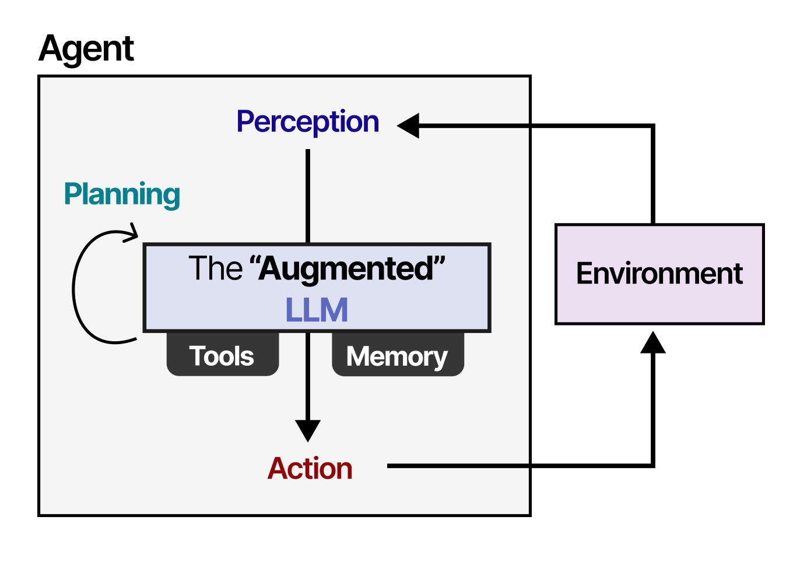

Vorab: THKI Chat in fünf Minuten
Der kostenlose KI-Zugang der TH Köln, was er kann und wo seine Grenzen liegen
Was Sie nach dieser Seite wissen
- wie Sie sich im THKI Chat anmelden,
- welche Sprachmodelle dort zur Auswahl stehen und wie sie im Vergleich zur aktuellen Modellspitze abschneiden,
- welches Modell Sie für welche Aufgabe wählen und warum Sie die Ergebnisse trotzdem prüfen müssen,
- warum dasselbe Modell mit und ohne Harness (Werkzeuge wie Websuche oder Datei-Upload) ganz unterschiedlich leistungsfähig ist,
- wie Sie mit einer kurzen Checkliste klären, mit welcher KI Sie gerade arbeiten, und wie Sie Ihr Verständnis mit fünf Lernfragen prüfen.
Anmelden
Der THKI Chat läuft über die NRW-Plattform KI:connect. Öffnen Sie https://chat.kiconnect.nrw/app, wählen Sie im Auswahlfenster die TH Köln und melden Sie sich mit Ihrer campusID an. Die Nutzung ist kostenlos; Ihre campusID-Daten werden laut Handreichung nicht an die Modellanbieter weitergegeben (TH Köln, 2025).
Keine personenbezogenen Daten eingeben, also keine Namen, Matrikelnummern oder Noten. Keine urheberrechtlich geschützten Texte hochladen, etwa eingescannte Buchkapitel (TH Köln, 2025).
Welches Modell?
Im THKI Chat wählen Sie in der Chat-Oberfläche ein Sprachmodell aus. Die Modelle unterscheiden sich deutlich. Die Grafik unten vergleicht sie mit Hilfe eines Benchmarks, einer standardisierten Testbatterie, die alle Modelle unter gleichen Bedingungen durchlaufen. Bild: ein Zehnkampf für Sprachmodelle, bei dem am Ende eine Gesamtpunktzahl steht. Der hier verwendete Intelligence Index bündelt zehn solcher Tests, von Wissensfragen über logisches Schließen bis zum Programmieren (Artificial Analysis, 2026).
Türkis sind die Modelle, die im THKI Chat freigeschaltet sind, grau zum Vergleich ausgewählte führende kommerzielle Modelle. Ein Klick auf eine Zeile zeigt die getestete Einstellung und die Quelle.
KI:Chat im Vergleich zur Modellspitze
Reasoning-Proxy: Artificial Analysis Intelligence Index v4.3.21 · Datenstand: 20.10.2026
Modell anklicken: Einstellung und Quelle. Türkis: KI:Chat · Grau: Spitzenvergleich.
- Der Intelligence Index bündelt zehn Tests, unter anderem Wissen, Schlussfolgern, Programmieren und Arbeitsaufgaben. Er dient hier als Proxy für Reasoning, ist aber kein reiner Reasoning-Test (Artificial Analysis, 2026).
- „38 (von 58)“ vergleicht den Indexwert mit dem Spitzenwert dieser Momentaufnahme. 58 ist keine theoretische Maximalpunktzahl; 38/58 ist kein Prozentsatz menschlicher Intelligenz oder korrekt gelöster Aufgaben. Die Skala bleibt auch beim Filtern unverändert.
- * GLM-4.7: Artificial Analysis kennzeichnet 22 (von 58) als Schätzung. Unterschiedliche Herleitungsbudgets werden verglichen: Claude Max mit Default Fallback; Muse Max; GPT-5.5 und GPT-5.4 mini Xhigh; GPT-OSS High; GLM, Qwen3.5 und Mistral Reasoning. Details sind pro Modell aufklappbar.
- „KI:Chat“ bezeichnet die in der bereitgestellten Modellübersicht aktivierten Modelle. Die Benchmarkwerte stammen nicht aus einem Test dieser Hochschulinstallation. Qwen3-Omni hat keinen vergleichbaren Wert und wird nicht als null dargestellt.
- Statische Momentaufnahme, keine automatische Aktualisierung. Vergleiche nur Werte derselben Indexversion. Spitzenvergleich: ausgewählte führende Modelle, keine vollständige Rangliste.
Quelle: Artificial Analysis. (2026). Comparison of Models: Intelligence, Performance & Price Analysis. Abgerufen am 20. Oktober 2026. Einzelnachweise: jeweilige Modellzeile.
Was folgt daraus für Ihr Studium?
Das stärkste Modell im THKI Chat ist derzeit GPT-5.5. Es liegt mit 38 Punkten klar vor den übrigen freigeschalteten Modellen, aber ebenso klar hinter der Modellspitze mit 58 Punkten. Für die Aufgaben in diesen Workshops, also Termine auslesen, Stoff sortieren, Leitfragen stellen und Texte kürzen, reicht das gut. Je schwieriger die Aufgabe, desto größer wird der Abstand: Bei mehrschrittigen Herleitungen, Beweisen oder Programmcode machen schwächere Modelle mehr Fehler, und sie klingen dabei genauso sicher.
Drei Faustregeln:
- Standardwahl: GPT-5.5 für alles, was Nachdenken verlangt, etwa den Klausur-Lernplan aus Workshop 1.
- Schnelle Kleinigkeiten: Kleinere Modelle wie GPT-5.4 mini antworten meist schneller und genügen für Umformulierungen oder einfache Listen.
- Immer prüfen: Ein schwächeres Modell ist kein Grund, auf KI zu verzichten, aber ein Grund mehr, jedes Ergebnis gegenzuprüfen. Genau darum geht es im Discern-Teil jedes Workshops.
Die Werte sind eine Momentaufnahme vom 20.10.2026. Modelle und Ranglisten ändern sich im Monatstakt; den aktuellen Stand zeigt das Leaderboard von Artificial Analysis.
Modell ist nicht alles: KI ohne und mit Harness
„KI“ vor und nach November 2022 meint oft ganz verschiedene Dinge, KI-Äpfel und KI-Birnen gewissermaßen. Früher ging es aus Anwendersicht meist um bessere statistische Prognosemodelle, die Expertinnen und Experten etwa für optimale Routen oder die Ablage von Containern nutzten (Russell & Norvig, 2021). Seit ChatGPT sprechen wir von viel breiteren Formen der Nutzung, von Milliarden Nutzerinnen und Nutzern und von einem gewaltigen KI-Hype.
Seit spätestens 2026 hat sich die Bedeutung erneut verschoben. Fortgeschrittene Modelle arbeiten inzwischen sehr selbstständig, denken teils über Stunden nach, recherchieren und stellen Texte oder Software zusammen. Mit den einfachen Chatbots ohne Internetanbindung, die 2022 und 2023 noch häufig halluzinierten, hat das wenig zu tun. Halluzinationen gibt es weiterhin, vor allem bei einfacheren Modellen und bei wenig professioneller Nutzung, etwa wenn man nur eine Frage ohne Kontext und ohne Qualitätskriterien stellt.
Den Unterschied macht die Harness, auf Deutsch das Geschirr: Wie das Geschirr die Kraft eines Pferdes auf einen Wagen überträgt, verbindet die Harness ein Sprachmodell mit Werkzeugen, damit es nicht nur redet, sondern handelt (Mollick, 2026). Drei Konfigurationen muss man heute unterscheiden (Grootendorst, 2025):
- LLM allein — ein Textgenerator. Stellen Sie sich einen sehr belesenen Bibliothekar vor, der nur reden kann, nichts nachschlagen und nichts ausführen.
- Erweitertes LLM — dasselbe Modell mit einem Werkzeuggürtel aus Websuche, Datei-Upload oder Code-Ausführung. Der Bibliothekar bekommt eine Werkbank.
- Agent — ein erweitertes LLM, das in einer Schleife arbeitet: Ziel, Plan, Werkzeug, Bewertung, neuer Plan. Der Bibliothekar erledigt mehrschrittige Aufgaben eigenständig und meldet sich erst zurück, wenn er fertig ist.
Der belesene Bibliothekar, der nur reden kann. Sein Wissen endet am Trainingsstichtag, Belege liefert er nicht, gerechnet wird „im Kopf“.
Derselbe Bibliothekar an einer Werkbank. Er schlägt nach, liest Ihr Skript, rechnet mit Code und zeigt, woher seine Aussagen stammen.
Die Abbildung von Maarten Grootendorst zeigt, wie ein Agent intern aufgebaut ist: Im Kern sitzt das „erweiterte“ LLM mit Werkzeugen (Tools) und Gedächtnis (Memory). Es nimmt seine Umgebung wahr (Perception), plant in Schleifen (Planning) und handelt (Action), etwa indem es eine Webseite aufruft oder eine Datei schreibt.

Wer Aufgaben an eine KI delegieren will, muss deshalb wissen, in welcher der drei Konfigurationen das eigene System läuft, weil Fähigkeiten und Risiken substanziell verschieden sind (Grootendorst, 2025; Mollick, 2024). Ein LLM ohne Websuche erfindet eine Raumnummer mit derselben Sicherheit, mit der ein LLM mit Websuche sie auf der Hochschulseite nachschlägt.
Quellen zu diesem Abschnitt: Grootendorst, M. (2025). A visual guide to LLM agents · Mollick, E. (2026). A guide to which AI to use in the agentic era · Mollick, E. (2024). Co-intelligence: Living and working with AI · Russell, S., & Norvig, P. (2021). Artificial intelligence: A modern approach (4. Aufl.)
Checkliste: Mit welcher KI arbeite ich gerade?
Gehen Sie die Liste einmal durch, wenn Sie ein neues Werkzeug oder Modell ausprobieren, und danach immer dann, wenn viel vom Ergebnis abhängt. Die vier Abschnitte folgen dem 4D-Framework, das Sie in jedem Workshop wiederfinden (Dakan & Feller, 2025).
Lernfragen: Haben Sie es verstanden?
Fünf kurze Fragen zu dieser Seite. Nach jeder Antwort sehen Sie sofort, ob sie stimmt und warum.